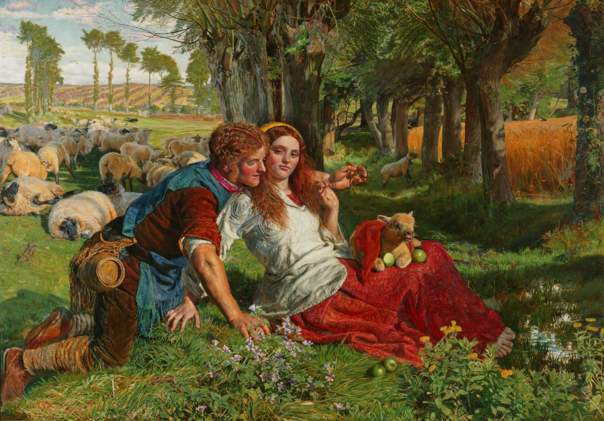

Ezekiel 34 — The Mister Translation

Ezekiel 34:2–6. The painting is Victorian and was not made for this chapter, and its shepherd is the figure the New Testament calls the hired hand (John 10:12), not Ezekiel’s rulers. What it shows is what the chapter charges: a shepherd turned toward his own company while the flock is left to wander.

Translator's Notes — verse by verse
⭐ “Woe to the shepherds of Israel who have been shepherding themselves”. The Hebrew keeps one root through the whole verse, ro’eh, “shepherd”, as noun and as verb, and the translation keeps it too (dictionary): the shepherds have been shepherding themselves, and “should not the shepherds shepherd the flock?” The shelf has several verbs for it. The KJV and the ASV have “that do feed themselves”, the NIV “who only take care of yourselves”, and the NWT 1984 “who have become feeders of themselves”. The Greek has mē boskousi poimenes heautous, “do not shepherds feed themselves?”, with a different verb for the feeding. The opening hoy is the woe (dictionary), the same one that opens Jeremiah’s oracle on the same figure, “Woe to the shepherds who destroy and scatter the flock of my pasture” (Jeremiah 23:1, now on these pages). Who are the shepherds? Radak says they are the kings, since the chapter has made the people a flock and so makes their kings shepherds, and he notes that the Aramaic Targum of Jonathan has parnasin, “providers”, for the shepherds. Rashi has the leaders of Israel, who pampered themselves out of the money of the people beneath them.
⭐ “You eat the fat… you slaughter the fat ones”. The verse names what the shepherds take: ha-chelev, the fat, the wool, and ha-beri’ah, the fat animal, and what they leave: “the flock you do not shepherd” (dictionary). The shelf splits on the first word, because the consonants of “fat” are also the consonants of “milk”. The KJV and the ASV have “Ye eat the fat”, the NWT 1984 “The fat is what YOU eat”, the NIV “You eat the curds”, and the Douay “You ate the milk”, after the Latin. The fat animal is ha-beri’ah: the ASV has “the fatlings”, the NIV “the choice animals”, and the NWT 1984 “The plump animal”. The letters of beri’ah stand in three verses of the Hebrew Bible: here, Zechariah 11:16, and Numbers 16:30, where the consonants are another word altogether, “if Jehovah creates a creation” (now on these pages).
⭐ Five failures, and “crushing harshness”. Verse 4 is a list of five things the shepherds did not do, in the order the shepherd would meet them: the ailing they did not strengthen, the sick they did not heal, the broken they did not bind up, the driven away they did not bring back, the lost they did not seek. Radak sorts them as animals ill in one limb, animals that need medicine, animals with a broken bone, an animal that has been separated from the others but whose place is known, and an animal that has strayed and is lost with its place unknown (the words chavash, “bind up”, dictionary, and nadach, “drive away”, dictionary). Rashi says nachlot are the withered ones that need holding up. The ASV has “The diseased have ye not strengthened”, the NIV “You have not strengthened the weak”, the TLB “You haven’t taken care of the weak”, and the Douay “The weak you have not strengthened”. Then comes the verse’s second half: “with force you have ruled them, and with crushing harshness”. The word be-farekh, “with crushing harshness”, stands in six verses of the Hebrew Bible: Egypt’s service of the sons of Israel (Exodus 1:13 and 14), the law that forbids ruling a fellow Israelite “with harshness” (Leviticus 25:43, 46 and 53), and here (dictionary). The verb that goes with it in Leviticus 25 is radah, “rule” (dictionary), the verb of this verse. The shepherds have done to the flock what Egypt did and what the law says no Israelite may do to another. The NIV has “ruled them harshly and brutally”, the TLB “ruled them with force and cruelty”, and the Geneva “with cruelty, and with rigor”.
⭐ “With none searching and none seeking”. Verses 5 and 6 are the result: the flock scattered for lack of a shepherd, food for every beast of the field, wandering over all the mountains and on every high hill, “with none searching and none seeking”. The two participles are doresh and mevaqesh, and the chapter will put both verbs in the mouth of God (dictionary). The KJV has “none did search or seek after them”, the NIV “searched or looked for them”, and the NWT 1984 “making a search”. Radak takes the scattering as the parable of the Targum, that they were handed over to be destroyed by every kingdom of the peoples. Rashi says the wandering sheep were left to do each as he pleased, because the shepherds did not rebuke them and did not judge between a man and his fellow, which is the work verse 17 will give to God.
⭐ “As I live”. The verdict is an oath, chai ani, “as I live”, and it is built to be heard twice: verses 7 and 9 repeat the summons, “Therefore, shepherds, hear the word of Jehovah”, with only the article moved. Radak says the repetition is to strengthen the matter, and that the Targum adds a call to repent, “wicked leaders, return to the Torah, and I am about to have mercy on you”. The charge is the one of the first half, and with the same word for the flock’s condition: it has become baz, “plunder”, and “food for every beast of the field” (dictionary). The ASV has “my sheep became a prey”, the NIV “has been plundered”, and the NWT 1984 “my sheep became something for plunder”. Rashi reads the last clause, “the shepherds shepherded themselves”, in a word: themselves.
⭐ “Look, I am against the shepherds”. The words hineni el ha-ro’im, “Look, I am against the shepherds”, stand in one verse of the Hebrew Bible, this one. The ASV has “Behold, I am against the shepherds”, the NIV “I am against the shepherds”, and the NWT 1984 “Here I am against the shepherds”. What God does is three things: he will “demand an accounting for my flock from their hand”, make them cease from shepherding, and rescue the flock “from their mouth”, so that they are no longer food for them. The verb of the demand is darash, “search for, require”, the one that was missing in verse 6, “none searching” (dictionary). The KJV has “I will require my flock at their hand”, the NIV “will hold them accountable for my flock”, and the NWT 1984 “I shall certainly ask back my sheep from their hand”. It is the same idiom as the demand for blood at Genesis 9:5, “I will demand an accounting” (now on these pages). Radak says that God will take the kingship out of their hand, and the shepherds will no longer shepherd themselves, which the Targum has as “the leaders will no longer provide for themselves”.
⭐ “Look, I myself”. Hineni ani opens God’s answer as the accusation opened with the shepherds: the “I” is doubled, the KJV has “Behold, I, even I”, the ASV “Behold, I myself, even I”, and the NWT 1984 “Here I am, I myself”. Two verbs follow. The first is darash, “search for”, the verb of the demand in verse 10 and of the missing searchers of verse 6. The second is biqqer, which this translation prints “inspect” (dictionary): to go over a thing one by one, as the psalmist asks “to inspect his temple” (Psalm 27:4) and as the law says of the tithe of the flock, “He shall not inspect whether it is good or bad” (Leviticus 27:33, both now on these pages). Here it is a shepherd going through a scattered flock, and Rashi says it is the language of visiting the sick. The NIV has “search for my sheep and look after them”, the ASV “search for my sheep, and will seek them out”, and the NWT 1984 “search for my sheep and care for them”.
⭐ “A day of cloud and thick darkness”. The words yom anan va’arafel, “a day of cloud and thick darkness”, stand in three verses of the Hebrew Bible: here, and the two verses that call it the day of Jehovah, Joel 2:2 and Zephaniah 1:15 (both now on these pages). Here it is the day the sheep were scattered, and God goes into it to rescue them. Rashi says it is the way of a flock to scatter on a cloudy day, and Radak that the exile was a day of darkness for them and the saying is a figure. The KJV has “in the cloudy and dark day” and the NIV “on a day of clouds and darkness”.
⭐ From the peoples to their own ground. The verbs of gathering are those of Ezekiel 36:24, “take you from the nations, and gather you from all the lands, and bring you to your own ground” (now on these pages), and the ground is the adamah (dictionary). Then the pasture: the mountains of Israel, “by the streambeds”, and in all the dwelling places of the land. Radak says goats like the mountains and sheep and ewes the valleys and streambeds, so Israel will dwell in every good place; the “mountain heights of Israel” he takes for Jerusalem, higher than all the land of Israel. The KJV has “by the rivers”, the NIV “in the ravines”, and the NWT 1984 “by the streambeds”. The sheep then “lie down”: tirbatsnah in verse 14 and arbitsem in verse 15, “I myself will make them lie down”, the verb of Psalm 23:2, “he makes me lie down” (now on these pages). Radak says the shepherd shepherds the flock until noon and then makes them lie down, as in “where do you pasture? Where do you make them lie down at noon?” (Song of Solomon 1:7, now on these pages). The KJV has “I will cause them to lie down”, the NIV “have them lie down”, and the NWT 1984 “make them lie down”.
⭐ The five failures undone. Verse 16 answers verse 4 with the same verbs reversed: “The lost I will seek, and the driven away I will bring back, and the broken I will bind up, and the sick I will strengthen”. The order of the first and last is turned round, the lost first where the shepherds sought it last. The NIV has “I will search for the lost and bring back the strays”, the ASV “I will seek that which was lost”, and the NWT 1984 “The lost one I shall search for”. The Gospels tell the same shepherd’s work as a story, “to seek out and save the lost” (Luke 19:10) and the man who leaves the ninety-nine on the mountains “and go looking for the one” (Matthew 18:12, both now on these pages); neither quotes Ezekiel. And the verse ends on a verb that shelves and ancient versions divide on: “but the fat and the strong I will destroy; I will shepherd them with justice”. The Hebrew has ashmid, “I will destroy”, and the ASV has “the fat and the strong I will destroy”, the NIV “the sleek and the strong I will destroy”, and the NWT 1984 “the fat one and the strong one I shall annihilate”. The Greek has to ischuron phulaxō, “the strong I will guard”, and the Douay follows the Latin with “I will preserve”; the Hebrew for “guard”, ashmor, is a short step in the letters from ashmid. Rashi says the fat and the strong are the one that pushes and thrusts her companions, and Radak that God will destroy the strength of those who push the weak from the pasture, and that he will shepherd them “with justice”, which is properly, each one getting what is fitting for it (dictionary).
⭐ “Between sheep and sheep”. The chapter turns from the shepherds to the flock itself: “And you, my flock” (the pronoun is feminine, like the flock), “Look, I am judging between sheep and sheep, between rams and he-goats”. The rams and he-goats are the strong of the flock, and they are still sheep. The shelf has two different readings of the animals. The KJV has “between cattle and cattle, between the rams and the he goats”, the ASV “between sheep and sheep”, the NIV “between one sheep and another”, the NWT 1984 “between a sheep and a sheep”, and the Douay “between cattle and cattle”. The TLB has “separate good from bad, sheep from goats”, which is the picture of Matthew’s scene, where the shepherd “separates the sheep from the goats” (Matthew 25:32, now on these pages). In Ezekiel it is a judgment inside the one flock between the strong and the weak. Rashi says it is between the men of the fist, the powerful, and the weak (the Talmud, Sanhedrin 21a, reported, not checked), and Radak says between the strong and the weak, and that the Targum has “between man and man, between sinners and the guilty”.
⭐ The good pasture, trampled with your feet. Verses 18 and 19 are an indictment in questions: “Is it too little for you to graze on the good pasture, that you must trample the rest of your pasture with your feet? And to drink the clear waters, that you must foul the rest with your feet?”, and then what is left for the others, “my flock graze on what your feet have trampled, and drink what your feet have fouled”. The Hebrew has the two nouns mirmas and mirpas, “trampled” and “fouled”, which sound alike. The NIV has “Is it not enough for you to feed on the good pasture?”, the KJV “Seemeth it a small thing unto you”, and the NWT 1984 “Is it such a little thing for YOU men”. Rashi says the strong among them shepherd on the good pasture and ought to leave the remainder, and yet even the remainder they trample, and it is not enough that they drink the water, they muddy what is left. The Targum, as Rashi and Radak give it, has “my people eat the surplus of what the ministers eat, and drink the surplus of what they drink”.
⭐ “The fat sheep and the lean sheep”. The pair in verse 20 is seh beriyah and seh razah, the fat and the lean, and the fat is the word of verse 3, spelled here without the aleph. Radak says it is the fat one, and the figure, as the Targum has it, is the rich man and the poor man. The picture of verse 21 is animal and exact: “you push with side and with shoulder, and butt all the ailing with your horns, until you have scattered them outside”. The NIV has “shove with flank and shoulder”, the KJV “thrust with side and with shoulder”, and the NWT 1984 “with flank and with shoulder YOU kept pushing”. The “ailing” are the nachlot of verse 4. And then comes the verb of rescue: “I will save my flock, and they will no longer be plunder; and I will judge between sheep and sheep”. The ASV has “therefore will I save my flock, and they shall no more be a prey”, the NIV “I will save my flock, and they will no longer be plundered”, and the NWT 1984 “I will save my sheep”. “Plunder” is the baz of verses 8 and 28 (dictionary).
⭐ One shepherd. Ro’eh echad, “one shepherd”, is the answer to the many shepherds of the chapter, and it is the figure of Ezekiel 37:24, “one shepherd will there be for all of them” (now on these pages), and John 10:16 has “they will become one flock, one shepherd” (now on these pages). The root ra’ah stands four times in the verse, as noun and as verb: he will be the shepherd the others were not. The Hebrew has an oddity in its pronouns. The flock is tson, feminine, and the verse says “he will shepherd them” in the feminine, otehen, and “he will be their shepherd”, lahen, in the feminine again, and between the two it uses the masculine, otam, “he will shepherd them”, so that the verse moves from flock to people and back. The ASV has “one shepherd over them, and he shall feed them, even my servant David”, the NIV “I will place over them one shepherd, my servant David”, the NWT 1984 “I will raise up over them one shepherd”, and the TLB “I will set one Shepherd over all my people, even my Servant David”.
⭐ “My servant David”. Who is David? Rashi says a king from his seed, and Radak the Messiah who will stand from his seed at the time of the salvation. The Greek has ton doulon mou Dauid, “my servant David”, and goes on in verse 24 with archōn, “ruler”, where the Hebrew has nasi, “prince” (dictionary). The KJV and the ASV have “prince among them”, the NWT 1984 “a chieftain in the midst of them”, and the NIV “prince among them”. The title is not the one of chapter 37, where David is “king over them” (Ezekiel 37:24) and then “prince to them forever” (37:25). The Hebrew calls David “my servant” four times in the two chapters, in 34:23, 34:24, 37:24 and 37:25; and the promise of David’s house is older, “your house and your kingdom shall be made sure forever” (2 Samuel 7:16), and Jehovah’s own words to David, “You shall shepherd my people Israel” (2 Samuel 5:2, both now on these pages). Isaiah has an everlasting covenant and “the steadfast loves of David” (Isaiah 55:3, now on these pages).
⭐ “I, Jehovah, will be their God”. The covenant formula follows the shepherd: “And I, Jehovah, will be their God, and my servant David a prince among them; I, Jehovah, have spoken.” The KJV has “have spoken it” and the ASV “I, Jehovah, have spoken it”. The Greek has “I, Jehovah, spoke”. The shepherd of Israel is both: the king who shepherds, and Jehovah who is God.
⭐ A covenant of peace, from Leviticus 26. Four of these verses reach back to the blessings of Leviticus 26. The words berit shalom, “covenant of peace”, stand in two verses of the Hebrew Bible, here and Ezekiel 37:26 (now on these pages), and their older relative is the “covenant, peace” God gives to Phinehas, briti shalom (Numbers 25:12, now on these pages; dictionary). The idiom is the cutting of a covenant (dictionary). The words ve-hishbati chayah ra’ah, “I will make the harmful animals cease”, stand in two verses of the Hebrew Bible: here and Leviticus 26:6 (now on these pages), where the promise is the same, and “none shall make you afraid” stands in the same verse, as “none will make them afraid” stands in verse 28 here. The KJV, the ASV and the Douay have “evil beasts”, the NIV “savage beasts”, the TLB “dangerous animals”, and the NWT 1984 “the injurious wild beast”. The wilderness is the place where the animals were: “they will dwell securely in the wilderness and sleep in the forests”, and Rashi gives Jonathan’s Aramaic for “sleep”, “they will move about in the thicket”, and adds that it can also be read in the language of sleep. Radak says they will not fear the beast of the forest.
⭐ “Rains of blessing”. “I will bring down the rain in its season — rains of blessing there will be.” Leviticus 26:4 has “I will give your rains in their season, and the land shall yield its produce, and the trees of the field shall yield their fruit” (now on these pages), and the verses here put the same two clauses in the other order, “the tree of the field will give its fruit, and the land will give its produce”. The words gishmei berakhah, “rains of blessing”, stand in one verse of the Hebrew Bible, this one. The KJV and the ASV have “showers of blessing”, the NWT 1984 “Pouring rains of blessing”, and the Geneva “rain of blessing”. The Hebrew says first that God will make them a blessing, “and the places around my hill”. Radak says the places around the hill are the whole land of Israel, because the temple is in the middle of it, and the temple is called a mountain and a hill, as in “the mountain of the house of Jehovah shall be established at the head of the mountains” (Isaiah 2:2). Rashi says “I will give them” is “I will place them in blessing”.
⭐ “The bars of their yoke”. “They will know that I am Jehovah, when I break the bars of their yoke, and rescue them from the hand of those who made slaves of them.” The words motot ulam, “the bars of their yoke”, stand in one verse of the Hebrew Bible, this one, and the verse it recalls is Leviticus 26:13, “I broke the bars of your yoke, and made you walk upright”, said of the Exodus (now on these pages; dictionary). The yoke that was broken in Egypt is the yoke that is broken again. The ASV has “when I have broken the bars of their yoke”, the NIV “when I break the bars of their yoke”, and the KJV “broken the bands of their yoke”. The Greek has “in my breaking their yoke”, en tō suntripsai me ton zugon autōn, and it makes the covenant of verse 25 a covenant “with David”, diathēsomai tō Dauid diathēkēn eirēnēs, where the Hebrew has “with them”. And verse 28 turns the word of verses 8 and 22 round: baz, “plunder”, the flock “will no longer be plunder for the nations” (dictionary). The NIV has “no longer be plundered by the nations”, and the KJV “no more be a prey to the heathen”.
⭐ “A planting for a name”. Matta le-shem is “a planting for a name”, and Isaiah 55:13 ends on the same words, “for a name”: “and it shall be for Jehovah a name, an everlasting sign” (Isaiah 55:13, now on these pages; dictionary). The shelf reads the planting differently. The KJV has “a plant of renown”, the ASV “a plantation for renown”, the NWT 1984 “a planting for a name”, the NIV “a land renowned for its crops”, the Douay “a bud of renown”, and the TLB “a notable Vine (the Messiah)”, which is the translators’ gloss and not the Hebrew. The Hebrew has matta, a planting, and not the tsemach, the Sprout, of “a Branch of righteousness” for David (Jeremiah 33:15, now on these pages; dictionary). Rashi says it is a standing that will be for an everlasting name. The hunger it ends is asufei ra’av, “swept away by hunger”: Rashi has “hidden by hunger, from the shame of their hunger and poverty”, and Radak that when there was a famine in the land they were driven about in Egypt and other lands, and bore the nations’ disgrace there, as the fathers did when they went down. The KJV has “consumed with hunger”, the NIV “victims of famine”, and the NWT 1984 “those taken away by famine”.
⭐ “I, Jehovah their God, am with them”. The formula of the book, “they will know that I am Jehovah”, comes in a longer form: “I, Jehovah their God, am with them”, and “they, the house of Israel, are my people”. The ASV has “And they shall know that I, Jehovah, their God am with them”, and the NIV “that they, the Israelites, are my people”. The people are the flock, and the flock is the people, and the last verse says both.
⭐ “The sheep of my pasture… you are humankind”. The words tson mar’iti, “the flock of my pasture”, stand in two verses of the Hebrew Bible: here, and “Woe to the shepherds who destroy and scatter the flock of my pasture” (Jeremiah 23:1, now on these pages), which is where the chapter began; and the people are “the flock of his pasture” in Psalm 100:3 (now on these pages; dictionary). Then the Hebrew adds two words, adam attem, “you are humankind” (dictionary). The KJV and the ASV have “are men”, the TLB “You are my men”, the NWT 1984 “YOU are earthling men”, and the NIV leaves the words out, as the Greek does. Rashi says: you are not like the beasts in my eyes. Radak says that when they are the flock of God’s pasture, shepherded with knowledge and understanding, they are called adam and not flock and beast, for a man lured by the lusts of the world is a beast and not a human being, and that when the good that God has promised comes, “the earth will be full of the knowledge of Jehovah” (Isaiah 11:9, now on these pages). The image comes round again at the end of Ezekiel 36:38, where the ruined cities are “full of flocks of humankind” (now on these pages).
Patterns worth carrying forward
Where this translation keeps the words exact and distinct: “shepherd” for ro’eh and ra’ah, noun and verb, with no “feed” or “tend”; “Woe” for hoy, as at Jeremiah 23:1; “the ailing”, “the sick”, “the broken”, “the driven away” and “the lost”, the same five in verse 4 and verse 16; “crushing harshness” for perekh, as at Exodus 1:13; “plunder” for baz at verses 8, 22 and 28; “demand an accounting”, as at Genesis 9:5; “search for” for darash and “inspect” for biqqer, as at Psalm 27:4; “to their own ground”, as at Ezekiel 36:24; “make them lie down”, as at Psalm 23:2; “sheep and sheep”; “prince” for nasi at verse 24; “cut a covenant of peace”, as at Ezekiel 37:26; “harmful animals”, as at Leviticus 26:6; “the bars of their yoke”, as at Leviticus 26:13; “a planting for a name”; and “humankind” for adam, as at Ezekiel 36:38. The Hebrew has no written and read pairs in this chapter.
Echoes paid. The shepherds of Jeremiah 23:1; the shepherdless flock of Numbers 27:17; the fat animal of Numbers 16:30; the crushing harshness of Exodus 1:13 and Leviticus 25:43; the demand of Genesis 9:5; the inspecting of Psalm 27:4 and Leviticus 27:33; the day of cloud and thick darkness of Joel 2:2 and Zephaniah 1:15; the lying down of Psalm 23:2 and Song of Solomon 1:7; Luke 19:10 and Matthew 18:12; the sheep and the goats of Matthew 25:32; one shepherd (Ezekiel 37:24; John 10:16); David (2 Samuel 5:2, 7:16; Isaiah 55:3); the blessings of Leviticus 26:4, 6 and 13; the knowledge of Jehovah that fills the earth (Isaiah 11:9); the covenant of peace (Numbers 25:12; Ezekiel 37:26); the Branch of righteousness for David (Jeremiah 33:15); the name of Isaiah 55:13; the flock of his pasture (Psalm 100:3); and the flocks of humankind (Ezekiel 36:38).
Echoes planted. The fat animal of Zechariah 11:16; the mountain of the house of Jehovah (Isaiah 2:2); and the mountain of Zion that the shepherd leads them back to (Isaiah 2:3). None of these is translated here yet.
⚠ A note on order: Ezekiel stands on these pages at chapters 1, 2, 3, 4, 5, 6, 7, 8, 9, 10, 34, 36 and 37, chosen by how often a passage is read rather than in sequence. The sequential thread is unchanged: next in sequence is Ezekiel 11.